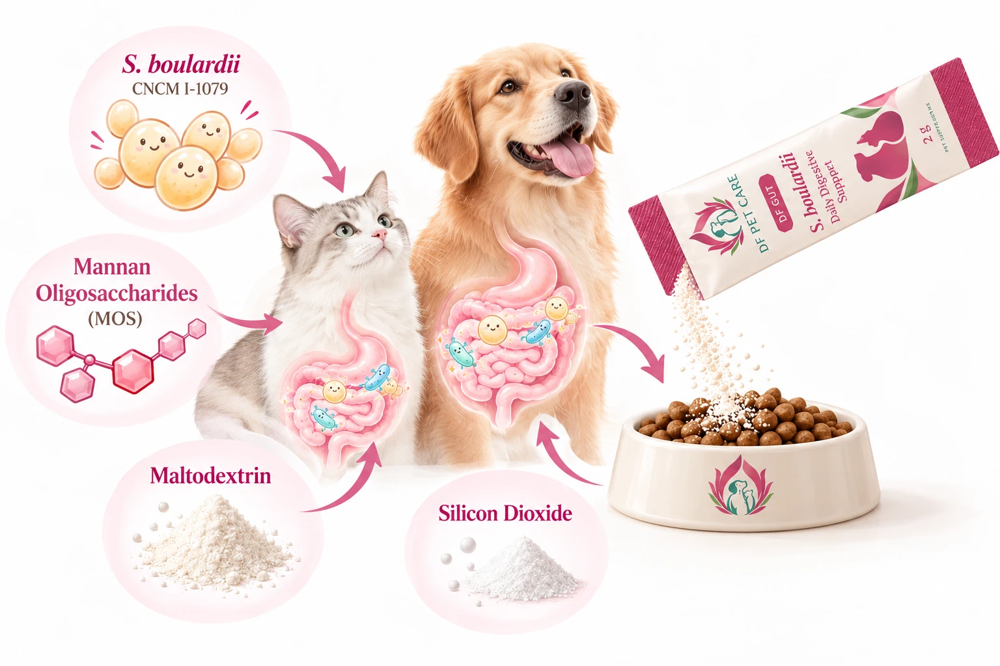
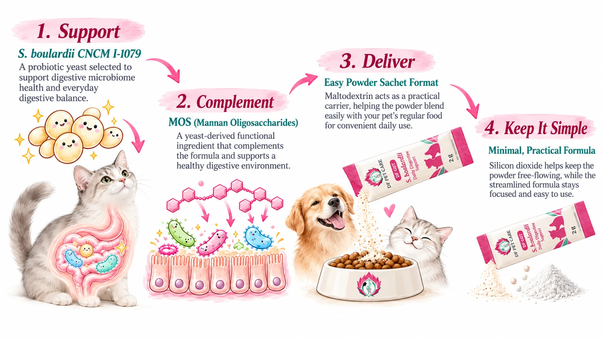
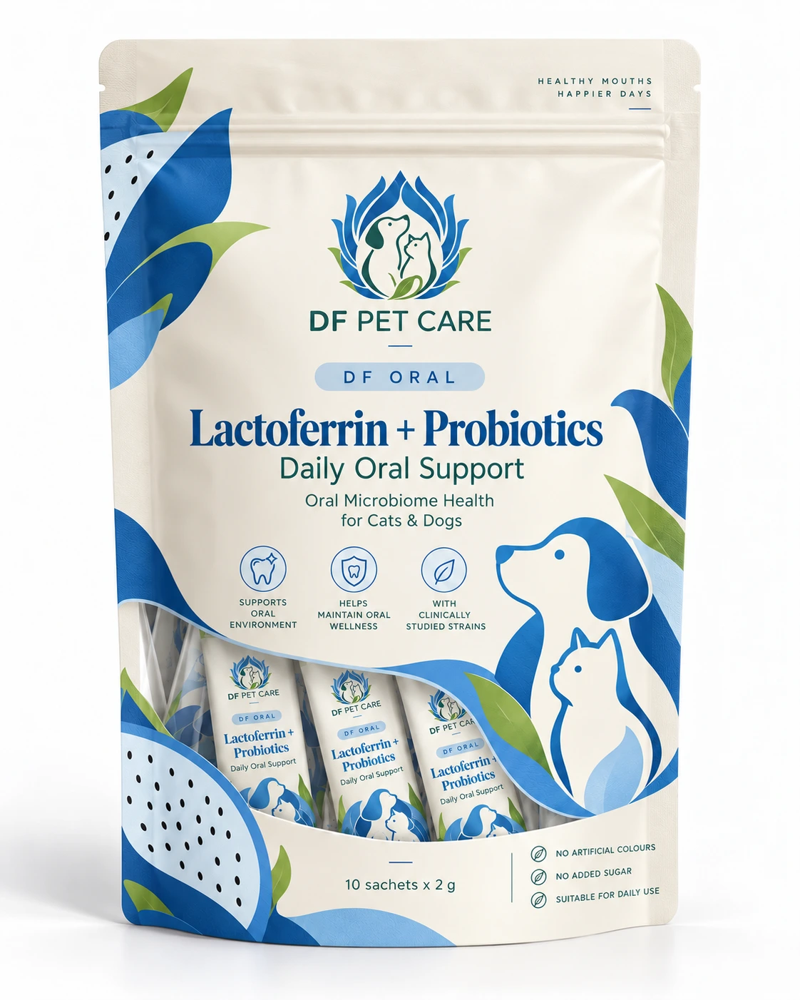
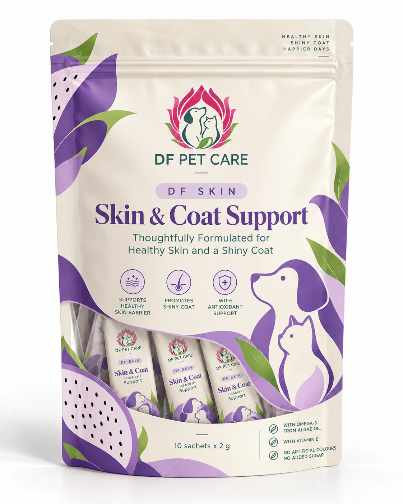

Our collections
Purposeful care.
From the inside out.
Science-led Microbiome Wellness for Pets.
DF Gut

Product 01 / Daily digestive wellness
S. boulardii
Daily Digestive Support
A powdered supplement featuring Saccharomyces boulardii CNCM I-1079 and mannan oligosaccharides (MOS).
10 × 2g sachets · 5 Billion CFU per sachet
Developed for cats & dogs. Species-specific suitability and feeding recommendations will be confirmed before commercial launch.
Everyday support. Purposeful ingredients.
A healthy gut is an important part of your pet’s overall well-being. Designed to complement your pet’s daily diet, this easy-to-use powder can be mixed with regular food for convenient digestive nutritional support.
01
Probiotic Yeast
S. boulardii CNCM I-1079: a specifically identified probiotic yeast strain studied in companion animals.
02
With MOS
Mannan oligosaccharides: a yeast-derived functional carbohydrate commonly used in animal nutrition formulations.
03
Thoughtfully Selected Ingredients
A streamlined formula focused on ingredient quality, practicality and everyday digestive wellness.
04
Easy to Serve
Convenient single-use sachets designed to be mixed with regular pet food.
What goes into DF Gut.

Maltodextrin, Saccharomyces boulardii CNCM I-1079, Mannan Oligosaccharides (MOS), Silicon Dioxide (Anti-caking Agent).
Active probiotic ingredient: Saccharomyces boulardii CNCM I-1079. Probiotic count: 5 Billion CFU per sachet.

A simple addition to their routine.
01
Open
Open the sachet.
02
Sprinkle
Sprinkle the recommended amount over your pet’s regular food.
03
Mix & serve
Mix gently and serve immediately.
Feeding guidelines
| Cats | To be determined |
| Small Dogs | To be determined |
| Medium Dogs | To be determined |
| Large Dogs | To be determined |
Serving recommendations will be finalized based on target-animal safety, formulation and dosage assessments.
Avoid mixing with hot food or hot water, as excessive heat may affect probiotic viability.
Storage instructions
Store in a cool, dry place, away from direct sunlight and excessive humidity. Keep sachets sealed until use. Use immediately after opening. Shelf life: 24 months.
Product specifications
| Brand | DF Pet Care |
| Collection | DF Gut |
| Product | S. boulardii Daily Digestive Support |
| Product type | Pet Digestive Supplement Powder |
| Intended species | Cats & Dogs |
| Form | Powder |
| Pack size | 10 Sachets × 2g |
| Total net weight | 20g |
| Probiotic strain | S. boulardii CNCM I-1079 |
| Probiotic count | 5 Billion CFU per sachet |
| Shelf life | 24 months |
| Country of manufacture | Hong Kong |
| Brand owner | DF Petscare (Hongkong) Limited |
A little more to know.
What is S. boulardii?
S. boulardii is a probiotic yeast studied for its interactions with the gastrointestinal environment. Its properties and effects depend on the specific strain, dose, and intended use.
Can I mix DF Gut with wet or dry food?
The powder is designed for mixing with regular pet food. Mixing performance and palatability will be confirmed during product development.
Is DF Gut suitable for both cats and dogs?
DF Gut is being developed for cats and dogs. Species-specific suitability and feeding recommendations will be confirmed before commercial launch.
Can DF Gut replace veterinary treatment for diarrhea?
No. DF Gut is intended as a nutritional supplement, not a replacement for veterinary diagnosis or treatment. Persistent or severe diarrhea, blood in stool, vomiting, lethargy, or dehydration requires prompt veterinary attention.
Exploring the microbiome, together.
DF GUT
Gut microbiome
Nutritional approaches to everyday digestive wellness.

DF ORAL
Oral microbiome
Targeted approaches to oral microbiome health and daily oral care.
In Development

DF SKIN
Skin microbiome
Science-informed approaches to skin wellness and healthy barriers.
In Development